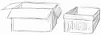
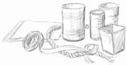

Rosie’s Excuses
“Rosie?” Mother’s voice floated down the hall, but Rosie hardly noticed. Her nose was in the Big Book of Baby Animals that was filled with darling kittens, foals and lambs. The cousins had lambs and soon they would have bunnies, too. Wouldn’t it be wonderful if I could have one for my very own? she sighed to herself.
“Rosie!” This time the book slammed shut as she jumped up. Mother stopping her sewing as Rosie skipped into the bedroom. “Rosie, please finish crocheting Emma’s doll blanket. I’ve almost got the nightgown finished, and her birthday’s next week.”
“It is?” Rosie began digging through her project box and found the ball of yarn and crochet hook at the bottom. A small strip of blue and white blanket hung like a squiggly snake. Rosie looked at it mournfully. “Maybe I’ll make her something else,” she said.
“Rosie.” This time Mother’s voice was firm. “You will not make her something else. Last month when you picked out the yarn we talked about it. What did you tell me then?”
“That I could do it,” Rosie said. “But, Mama, I didn’t know it would take so long. I don’t feel like doing it anymore.”
“You’ll never accomplish anything unless you learn to do things you don’t like.” Mother sighed and turned back to her work.
Rosie sighed, too, as she took up the hook and yarn. It had been so pretty and wonderful a month ago. As she worked the loops of yarn, she wished very hard that she could be outside playing or helping the cousins on the farm. It was tiring making a blanket.
“Oh, Mother, could I have a bunny?” she asked suddenly. “Amy’s rabbit’s going to have babies and they said I could have one.”
“What about your pigeons? You must learn faithfulness in these little things first, Rosie.”
It is because Big Blue died, Rosie thought as she picked up her hook once more. After the storm, only five of the seven pigeons had been found, anyway. The boys had been working on training them, and Rosie was glad to let them. It was so wet, and besides, the pigeons weren’t very friendly. A little rabbit would be much more fun. If I finish this blanket maybe she’ll let me, thought Rosie, and bent to her work again.
Two days later, when Amy called to tell about their four baby bunnies, Rosie pulled out the blanket again. It still looked more like a scarf than a bedcover after she added three more rows. Rosie was glad when she and Emma were called outside.
“You need to get the boxes out of the shed and smash them,” Daniel said. “We’ll unload the straw bales.” For awhile it was fun jumping on the old dusty boxes, but soon the girls got tired. Rosie poked her head in the shed to see what the boys were doing. The great blocks of golden straw were wonderful—and Chad was building a hideout in the middle!
“I need help putting the boxes in the back of the truck,” Dad called from outside. The boys brushed the straw out of their hair and headed for the door, but Rosie didn’t move. They can do it without my help. I should find a good place for my rabbit pen, anyway. She crawled into the straw stack and planned on how she could keep a rabbit. She forgot all about Emma’s blanket, or that she had chores to do. Before Rosie knew it, the supper bell was ringing.
And so the morning of Emma’s birthday arrived, and the blanket was still only half done. Rosie didn’t feel very happy when Mother called her to the bedroom. She’ll say that I haven’t been diligent enough, and now surely I can’t get a rabbit, she sighed to herself. But Mother didn’t mention the blanket at all.
“Rosie, dear,” she began with a smile, “wouldn’t you like to help make a surprise birthday cake for Emma?” When Rosie jumped up and clapped her hands, Mama said, “If you’ll clean up the bedrooms this morning and watch Kyle for me, we’ll work on it this afternoon.”
It was hard to keep quiet about the surprise, but Rosie did her best. She dusted and tidied the bedrooms as fast as she could. Kyle wanted to play outside, so she bundled him up and took him out to the straw fort. She had never made a cake before and Rosie was sure it would be great fun. She could hardly wait until naptime.
“Mama?” Rosie whispered, as soon as the house was still. “Can we do it now?”
A look of surprise crossed Mother’s face and she exclaimed, “Why dear, I’ve been so busy I completely forgot! I’m sorry, but I don’t have anything ready.”
“But can’t I help you get ready?” Rosie asked quickly.
“I’m afraid not, dear—the margarine is frozen solid and I forgot all about getting cream cheese when I went to town this morning,” Mother said, peering in the refrigerator. “I guess we’ll just have to make some cookies.”
Rosie’s lip trembled. “But you said….”
Mother pulled her into her lap and held her close. “It’s hard when someone doesn’t do what they said, isn’t it?” she whispered. Rosie burst into tears. “I let other things distract me on purpose to teach you something. Do you understand now how important it is be diligent and follow through, dear?”
Brushing her tears away, Rosie looked up into Mother’s kind face. Slowly she nodded her head and whispered, “Yes, Mama. And I’m very sorry that I—I wasn’t diligent. I don’t mean to forget, but—but I just do, lots of times.” Rosie hung her head.
“Let’s learn from this,” said Mother, cheerfully. “It is when we stick to our little responsibilities, then others can trust us for bigger things. And diligence is the only way we can live for Jesus and do what is
right. It is a very good habit
to set aside time to pray every day and ask God to help you be diligent.”
Rosie looked up with a smile. “Mama, I have an idea! You know the straw fort we have? Maybe I could go there every day for my own prayer time—it is so cozy and quiet.”
“Yes, that would be a fine idea. And Jesus will help you to be faithful if you ask Him.”
“I will,” said Rosie, and gave a little sigh. “Even if it is hard, I’ll finish that blanket for Emma right away.”
Our Part
In the story, Rosie was learning that there are two parts to an agreement. There was Mother’s part and her part. When Rosie or Mother didn’t do their part, the agreement didn’t work. If we agreed that I’d give you a dollar if you worked for me, then your part is to work and my part is to give a dollar. But if someone doesn’t do their part of the agreement, we call them “unfaithful.” That means that we can’t trust them to do what they say. What a sad name to have!
Jesus told us how to be faithful. He said that we must first do our best in the little jobs that we have. If Mom tells you to sweep the floor, and you do it quickly to get it over with, you are not being faithful. But suppose you ask Jesus to help you to be careful and diligent. What will happen then? Why, Mother will be very pleased, and soon she will trust you with bigger responsibilities! Your part is to do your best, with Jesus’ help.
Some people talk a lot of what they will do, but they never do it. Is that being faithful? No, we soon will learn not to trust what they say. Telling others how good we are doesn’t make us good. Not at all! We need to be diligent and show goodness by obeying and doing right. Talk isn’t worth much, but we can trust those who always do what they say.
God has given us many promises. He tells us that He will bless us if we obey Him. Now, we know God will do what He says. But will we do our part? If you want to be happy, be faithful to obey Jesus and love Him. And He will send you rivers of joy and peace. Our part is to press on and do right, even when it is hard. Being diligent is not always easy, but God will help us if we really want to do right. God is always faithful. Will you be?
Look, look: it is small and long like a worm. Watch it crawl, creeping slowly along the leaf. What is is doing? See the holes? It is eating the leaf with its tiny nibbling jaws! What is this new animal friend? Why, it is
The Confident Caterpillar: Faith
Maybe it is black and blue, or perhaps it is striped like a tiger, or a pale lime green. Caterpillars come in many colors and live on many plants; some eat our garden cabbages! Nibble, nibble, munch, and soon the leaf is full of holes. Why do I call him confident? Just watch a bit. The little tiny creature doesn’t think about anything but food as he nibbles all around the leaf. Where is he now? Oh, there he goes, right up that stem to search for something more to eat. He isn’t stopped by anything!
The caterpillar is confident that eating is what he should do, and so he keeps at it. He doesn’t worry about the birds, or that the food might run out. He doesn’t stop to think about how other animals hop, fly, and run, and wish he could be like them. God can take care of everything else. He just eats, and grows bigger, and eats. Suddenly one day he stops eating and sits very still. Hanging upside down he begins to spin little threads around and around. God made the caterpillar that way for a special reason, but the little caterpillar doesn’t know why. It spins its chrysalis and trusts God to take care of everything else.
How can we be like the caterpillar? God didn’t make us to eat all day, but He did make us to be His children. He wants us to obey, and love, and be good and not worry or complain. Just like the caterpillar, we need to do our part, and trust God to do the rest. Jesus said “Have faith in God.” That means to trust God to take care of you, to protect you from dangers, to give you what you need. We need to be confident like the caterpillar. Maybe it seems dark and alone in the chrysalis. There are no green leaves to eat or space to move. Is he worried and lonely? No, he just hangs there quietly, because that is what God told him to do. And because he has faith in God, he is going to become a beautiful butterfly.
Do you want God to make you into something beautiful? The secret is faith. It is being confident and very sure that God is there and that He loves you. You don’t have to be afraid of what might happen, or complain because you can’t be like someone else. You can trust God and know that He has a plan, a butterfly plan, even if you are only little and plain and can’t do much. Have faith that God can.
Project, poem, and verse
Faith Seeds
Jesus said that if we start with just a little faith, He’ll make it grow and grow like a seed does. Seeds look so small and worthless, but they make the world beautiful with flowers and green plants. Just try this—get some flower seeds (such as Cosmos, Sweet William, Marigold, and Bachelor Buttons) and sprinkle them out in the soft soil near a fence. If they are watered and not stepped on, they will grow tall and bloom this summer. And do you know? If you will just trust God with the little things, your faith will grow and grow until you have flowers of faith brightening up every gloomy corner.
Serving Jesus
Children’s hands can work for Jesus,
Glad to do His holy will;
Helping playmates, serving Mother,
They are serving Jesus still.
Let your hands be quick and true;
God will give them work to do.
Children’s lips can move for Jesus,
Speaking gently all the while,
Making other people happy,
With a love-word and a smile.
Let your speech in kindness fall;
Jesus listens to it all.
—From Poems for Memorization
A verse to hide in your heart:
“Trust in the LORD, and do good; so shalt thou dwell in the land, and verily thou shalt be fed.” (Psalm 37:3)
“I don’t like waiting,” Edward said. “Why can’t we try the cookies now, Alice?”
“They’re not ready yet,” his sister said, sliding the tray in the oven.
Grandpa chuckled from his easy chair. “How about a story while we wait for them to bake?” The children gathered around as he began.
God’s Better Plan
(Reference: Exodus 2-4.)
It is not only hungry children that don’t like waiting. In the land of Egypt there lived a man, raised in Pharoah’s own court, who didn’t like to wait. He had the best teachers, many servants and fine clothes. But being a prince wasn’t enough, for the man wanted to be useful and help his people. And his people were Pharoah’s slaves. This man’s name was Moses.
Before Pharoah’s daughter had taken him to the palace as a small boy, Moses had been taught about the God of Heaven. He was the one who brought them to Egypt, and would one day take them to their promised land. “But now my people are slaves,” thought Moses, as he rode out in his chariot. His heart was saddened by their suffering; he didn’t want to be an Egyptian prince any longer. “These are my people,” he said, “and surely the God of my fathers has sent me to deliver them.”
But how could he? Moses saw an Egyptian beating one of the slaves. Here was his chance! He looked quickly around, and then grabbed the man and killed him. “Now they will know that I am here to help them,” he thought. But his people didn’t think that at all. “Who made you in charge?” one man asked. “Are you going to kill me, too?”
Now Moses was afraid. “Soon Pharoah will find out and I will be in trouble,” he said. He couldn’t live in the palace and he couldn’t help his people, so he ran off into the wilderness. It seemed like everything was gone wrong. But God saw it all, and He had a better plan for Moses. His plan was for some new lessons in the wilderness with sheep.
It was off in a strange country that Moses found a place to stay with a friendly man named Reuel. Reuel had seven daughters and many sheep, and he was glad to have Moses stay and help. So the Egyptian prince became a servant and spent each day wandering around in the hills. It was lonely and hard work, but Moses learned many lessons. He learned to be gentle with the sheep and watch over them carefully. It was God’s plan for him to become a good leader, and it took a lot of waiting.
So it was that forty years passed, and it was on a lonely mountain that God called Moses. “I am the God of your fathers,” He said from a burning bush, and Moses covered his face and listened. “I have surely seen the suffering of my people, and I am come to deliver them.” It was God’s plan, and God’s time.
“Oh, that is a lovely story,” said Alice, sitting back with a sigh. A second later she jumped up, for the timer was ringing.
As she ran off to check on the cookies, Grandpa said, “Well, Edward, what do you think about waiting now?”
“I don’t mind waiting when you tell us stories,” Edward said with a grin.
“And waiting makes them taste better, too,” said Sammy, licking his lips as Alice brought in a plate of cookies.
“But Moses didn’t get to listen to stories, or get a cookie afterwards,” Grandpa said. “Was it still better to follow God’s plan?”
“Yes, because God knows best. I guess Moses had to learn a lot before he could really be their leader,” said Alice, thoughtfully. “It was really a hard job to lead them to the Promised Land.”
“I think God had him watch the sheep for practice,” said Sammy.
“But Moses didn’t get them out of Egypt,” said Edward. “God had to do that.”
“Moses was just God’s servant after all—just like when he watched sheep,” said Alice.
From The King’s Daughter and Other Stories for Girls
Duty and Pleasure
“Duty first, and pleasure afterward,” wrote Amy Leslie in her copybook one fine morning.
Line after line she penned, making many a mistake, for her thoughts were far away. At last her mother, who was sitting near her, said, “Amy, this is the third time you have spelled pleasure without a ‘p,’ and left out the ‘f’ in afterward. Put down your pen and tell me what you are thinking about; for I am sure it is not of your copy.”
“I was only thinking,” replied Amy, “how glad I should be if my copy said, ‘Pleasure first—duty afterward.’ It is very hard always to have the disagreeable part first. I wish I could have one whole week with no duties at all! How I should enjoy myself!”
Mrs. Leslie remained silent for a moment; then she said, while a quiet smile played round her lips, “Well, Amy, for once you shall have what you want. For a whole week you may amuse yourself; no duties, mind, my child—none at all.”
“There is no chance of my wanting any, I assure you, mamma,” said Amy, joyfully; “I shall be so happy—you’ll see!”
“Very well, then,” said Mrs. Leslie; “you may begin tomorrow. Today I shall expect you to do as usual.”
Amy said no more; she finished her copy, learned her lessons, then went to the nursery to take charge of her little brother while the nurse was busy with other work. Afterward there were socks to mend, and an errand to run, and buttons to sew on to baby’s shoes, and a letter to write. And so the day passed, and the next morning dawned on our pleasure-loving little friend.
“No duties,” she said to herself, as she woke at seven, which was her usual time for rising; “so I can lie in bed as long as I please.” She turned over and as she could not sleep, began making plans for the day, and thinking what a delightful time she would have. About half past nine she came down stairs, to find her breakfast on the table: milk, toast, and egg, all as cold as possible. “What a wretched breakfast!” she said, as she took her seat.
“Well, dear,” replied Mrs. Leslie, “your breakfast was ready at the usual time, and of course it is cold now.”
Amy said no more. She ate with only half her usual appetite, and, finishing in about five minutes, left the room. As she went upstairs to fetch her hat, Baby in the nursery stretched his arms for her to take him, but she hurried past, and left the little fellow crying with disappointment.
Soon she came down again, with a fairy book in one hand, and a box of chocolate drops in the other. The sweets had been a present, but thereto her mother had allowed her to have only one or two daily; now, however she might do as she liked, and at present her idea of perfect bliss was the combined charms of chocolate drops and fairy stories.
For about two hours she sat in the garden; then she grew tired, and a little sick from eating too much chocolate, and was returning to the house, when her pet kitten ran out to meet her. For a short time she amused herself by playing with it, dressing it up in her pocket handkerchief and carrying it like a baby; but Miss Pussy wearied of this, and at last jumped out of her new dress and her mistress’ arms, leaving a scratch as a keepsake behind her.
Altogether, the morning was hardly a successful one, nor was the afternoon much better. After dinner, one of Amy’s little sisters tore her dress, and was running to Amy to ask her to mend it; but Mrs. Leslie said:
“Don’t go to your sister, my child, come to me”; and little Jessie, wondering, let her mother darn the rent. Amy felt very uncomfortable, for she knew that Mrs. Leslie’s eyes were not strong, and were probably aching with the effort of such fine work; but she shrank from offering her services, and made her escape from the room as soon as she could.
In the evening she was about to draw her chair to the fire and read the newspaper to Mr. Leslie, a duty of which she had always felt rather proud; but her father gravely took the paper out of her hand, saying quickly, “No, Amy, this is a duty; remember you are to amuse yourself and do nothing else.”
Amy’s eyes filled with tears, and she ran up stairs to her own room. She had no heart to read the fairy book, or to make clothes for her doll, or to play with the kitten, or even to eat the rest of her chocolate drops.
“I shall never be able to bear another day of this,” she said to herself; “I thought it would be so delightful to have no duties, but somehow my play does not seem half so good as it did before.”
The next day brought no real pleasure and comfort. Listlessly Amy wandered about, having no zest for any of her former amusements, and feeling thoroughly unhappy. She began to long for the duties which had seemed so irksome to her; she could hardly keep from tears when she saw the others busy over lessons, or her mother doing work which had formerly been hers.
At last her misery ended in a fit of crying, and shutting herself up in her own room, she gave way to it. Sob followed sob so quickly that she did not hear the door open, until her mother’s arms were round her, and her hot, aching head was pillowed on her mother’s shoulder. Not a word passed between them for a few minutes; then Amy sobbed out, “O Mother! Mother! The copy was quite right, ‘Duty first, and pleasure afterward’; for without duty there is no pleasure at all.”
Something You Can Do
Each day you can do something special. You don’t have to be big, or rich, or super smart. You can do it right at home, at school, work, or play. Do it for your father, mother, brothers or sisters. You only need two strong hands and a willing attitude. Do you know what it is?
It is being a Servant—the kind that makes life better and easier for everyone else. Just like Jesus, who always gave a smile and held out His hands to help. Don’t you think that when He was little, Jesus was a willing helper in His home? Yes!
Here is an idea to help you get started in being ready-to-serve:
My Trusty Work Box
- Gather: First find a small box that is sturdy enough to carry things. A shoe box is a good size. The other things you will need are: scissors, glue, rope or ribbon for handles, colored paper to decorate it, and some tall cans or containers for organizing things.
- Make it: First cut off any box flaps. Punch holes in the sides for two handles, far enough down to be stong. Now tie on the ribbon or rope so that it just right for carrying. For the inside, ask someone big to help you hot glue a couple containers down the middle. Do your best now—you want your work box to look nice and be easy to use.
-
Decorate: On the outside of your work box glue down the paper and put any designs you want. Maybe some caterpillars will help you remember the lesson on faithful work. Or write down a Bible verse about serving others. The one in “Gems for your Treasure Chest” is a good worker’s motto.
- Fill it: Your work box is now going to be your trusty friend. What should you put in it? First figure out what chores you have to do each day and write them down carefully. This is your “to do” list. Next see what you will need to do these jobs. A duster? Some garbage bags? An apron, or cleaning cloth? Mom or Dad might have some ideas. Keep your work box tidy, with the smaller things kept in the containers.
- Use it! When you have to clean your room, take along your work box. Tuck in two plastic bags—one for trash, another for dirty clothes. That will make the cleaning go faster. Or, if you need to weed outside, tuck in your trowel and work gloves. Memory verse cards are fun to have along; practice your Bible verses while you work. Be responsible and don’t leave your work box out in other people’s way. Most of all remember that a willing spirit counts for everything. Be a servant for Jesus!
God’s Best
Do you know how much God loves us? A whole lot. A lot more than anyone else in the whole world can. Most of us have parents who love us. Sometimes when we do what’s wrong then our parents have to spank us. It isn’t very fun at all and it hurts a lot. But it is for our good.
Betsy was playing with the matches by the wood stove. Her mother found her there and took her into her room and spanked her. Betsy cried a lot, but she learned that the matches are not something to play with. If her mother had not spanked her she might have accidentally started a fire in the house or she might have got burned with them. So even though it hurt, it was good for her mother to punish her. Sometimes God has to correct or even punish us, too. It isn’t because He doesn’t like us. Oh, no! He loves us a whole lot! But He does it for our good. He sees that being patient and kind and having love in your heart will make you happy.
Do you want to be patient and kind? Sometimes God allows other people to be mean to us and or makes us wait a long time for something we want. Anyone could be kind to people who are kind to them; even people that don’t love Jesus do that. But Jesus wants us to have the kindness that works when people aren’t being kind to us. He watches us and sees when others are mean to us. It makes Him very happy when we are kind back to them, even if no one else sees it. We have to have Jesus’ love to have that kind of kindness.
When we are sick we usually wish to feel better again right away. It is hard to think that being sick is any good—but it can be! The flower is cheerful when it’s sunny and when it rains. It might like the sunshine better but can you guess what would happen if it didn’t get any rain? It would slowly die. Just like the flower we need hard things (or rain) as well as sunny times. God could make you better right away if He thought that was best for you, sometimes He does, but maybe He wants you to learn how to be patient. You can’t really have true patience if you get everything you want right away.
God loves us so much that He sends what’s best for us. Even though we may not like His best right now, later when we look back and see today, then we will realize that God’s way was best.
Love,
Another one of God’s soldiers
The Drainage Ditch
“Mark,” Mother said, “when you get out of school at 3:00, I will be watching for you. You should be home at 3:15. You hurry right home.” Mark nodded. He did his best to look big and trustworthy.
The walk from school was about ten blocks, and Mark thought that the big, concrete drainage ditch that crossed under the streets was the most wonderful place that there was. The concrete sides were slanted so you could run really hard up the sides and get out at places, and bushes and tree branches hung down at other parts, so you could let yourself down into the ditch. There was just a little water that ran in a little stream in the very middle of the ditch. You could block it with sticks or stones, and it would form a lake puddle. Under the streets, it was like a cave, and the water spread out more on the concrete floor of the ditch. It was harder to get through without getting wet.
Mother had no idea how interesting the drainage ditch was!
Mark knew better than to spend too much time exploring the ditch, so he only looked at one part of it each day. Then he would hurry home.
“Mark,” Mother said, “today, it took you until 3:20 to get home. Why are you late?”
“I was looking in the drainage ditch,” said Mark. “I stood on the bridge at Huston Street and looked at the water.” He had stood there and looked, Mark thought. He had also stood in the ditch and looked, as well.
“You stay away from that ditch,” said Mother. “Sometimes a lot of water goes down those drainage ditches. You come right home.”
Then Mark made a Wonderful Discovery. He saw that the drainage ditch could be used as a way to go home. Why walk on the sidewalks by the streets, first one way then the other, when there was a perfectly good drainage ditch that cut across the blocks? It was much more fun to walk home through the drainage ditch.
There were so many amazing things to look at in the ditch that Mark realized that he was taking too long to get home. So, he went home by part of the ditch, then climbed out and ran the rest of the way. The next day, he explored a different part of the ditch. First, he ran to that part and climbed down. Then he went a ways, climbed out, and ran the rest of the way home. He could have done this better if he owned a watch. He would have enjoyed it a lot more, too, if he hadn’t felt more and more sneaky and deceitful.
As Mark was walking along the drainage ditch toward home, suddenly he heard a voice from the sky. “Mark!” it called. At first, Mark thought that God was calling him, as He had called Samuel in the Bible. Mark was scared and he felt very bad. He was disobeying his Mother. But it was not God. It was Mother. She was standing up above the concrete ditch, and she did not look pleased with Mark. God was not pleased with him, either.
That was the last time that Mark ever tried to come home in the drainage ditch. Mother helped him to remember not to disobey and deceive her anymore. Can you guess what happened to Mark? Do you think that he needed it? What do you think could have happened to Mark if his mother was not watching for him?
Letter to a Little Princess
Dear Princess,
Spring was coming to King Jesus’ fields and orchards. One fine morning all the princesses and princes were sent out to work in the old garden plot. Princess Precious tied her work apron over her golden gown of obedience, then helped little Joy with hers. She liked to work outside with the Gardener.
“I wonder what we’ll do today?” Precious wondered. Last year they had planted daffodil and crocus bulbs, which were just now showing their bright faces along the walks. Joy couldn’t help bending over to admire them.
“Aren’t they pretty?” she said. “I hope we can grow some more!”
“Yes, let’s ask if we may.”
When they caught up with the others, the Gardener was passing out shovels, picks, and hoes. As soon as Prince Valiant spied them, he grinned. Precious took the hoe she was handed and stepped over to her brother. “What are we going to do?” she asked.
“Dig in the mud. Yippee!” He thrust his pick into the grass.
Precious wanted to ask why, but the Gardener was speaking. “All the boys start chopping up the ground on the other end. The girls can begin raking out the rocks and digging out the weeds with me.”
Joy’s little rake was soon furiously scratching, and Precious began chopping at the weeds. Chop. Clunk-clop. Her hoe bounced off a rock. This was hard work and Precious didn’t enjoy it. She wished she could be planting something at least. But if she must, she must. Clop-chop. Chop-clop.
“Here, Precious—this way.” The kind voice of the Gardener broke into her dull chopping. He took her hoe and tipped the blade to dig in behind a little green thistle. “See here?” he said. “Aim a hard blow in the back and it’ll lift out without much work.”
Precious managed a little smile. “Thank you, but Gardener, why do we have to weed? Can’t we plant flowers like last year?” The Gardener chuckled and picked up a clod of dirt. Joy’s rake had stopped and she came closer.
“Could a flower grow in that?” He asked. The girls looked at the hard, rocky soil and shook their heads.
“And the weeds don’t help either, I guess,” Precious said, feeling a little ashamed. “But hoeing is such tiring work.” She sighed. Joy sighed, too.

“Would you girls like some work gloves?” Gardener reached into his pocket and produced two fine gray pairs. “The King designed them to encourage workers.” Precious slipped hers on, then held up her hand to read the words: “I can do all things through Christ which strengtheneth me,” (Philippians 4:13) in green letters.
“Look at mine!” squealed Joy. Precious read the sunny writing: “The Joy of the Lord is my strength,” and smiled. Working would not be half so bad with these on!
The other children were coming over now and each one was handed a pair of the lovely gray gloves. The Gardener seemed to have an endless supply, each with bright-colored writing. Precious was wondering how many there were when Valiant spoke up. “Where did you get them, Gardener?”
“From the King. They are called Faithful Promises. He has chests and chests of them, so never fear to ask for a new pair when these wear out.”
It was a smiling group of children that went to work after that. The sunshine flooded the garden patch and merry voices and laughter soon joined the bird songs. “Surely King Jesus cares about us very much,” Precious thought as she bent over her work once more. “I want to work for Him and please Him all I can.”
With love,
Aunt Faith
")
 Step by Step
Step by Step
Dear Reader
As always, our prayer is that God will use our weak efforts and multiply them to your blessing. We are thankful to be serving such an able King! May you come to realize the riches of His Kingdom and know the sweetness of His love.
Please do write in. We welcome questions and would be very happy to hear how the Lord has been helping you. If you want more encouragement for Christian living, Foundation Truth is also available for youths and adults.
We are a Bible-believing family that includes Rick and Krista Erickson, Laura (21), Skye (20), Joel (19), Kara (17), and Amanda (8). The publishing of Treasures of the Kingdom is mainly done by Laura and Joel, with help (guidance, proofreading, contributions) from others. We appreciate your prayers, for we certainly can’t do this without God’s help!
In the King’s Service,
The Editors